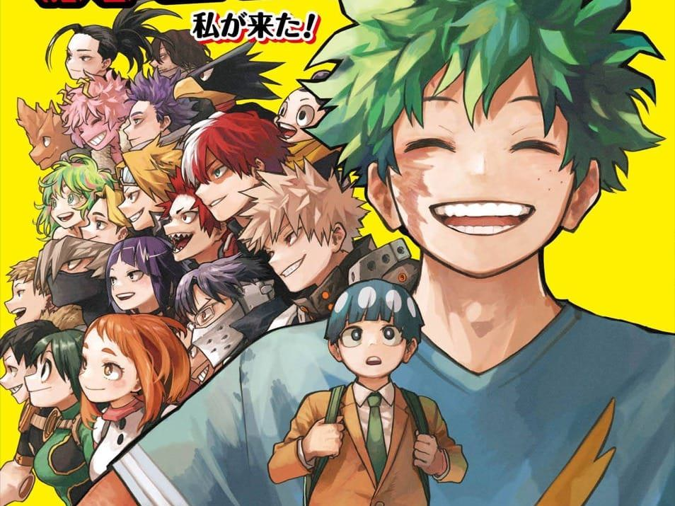
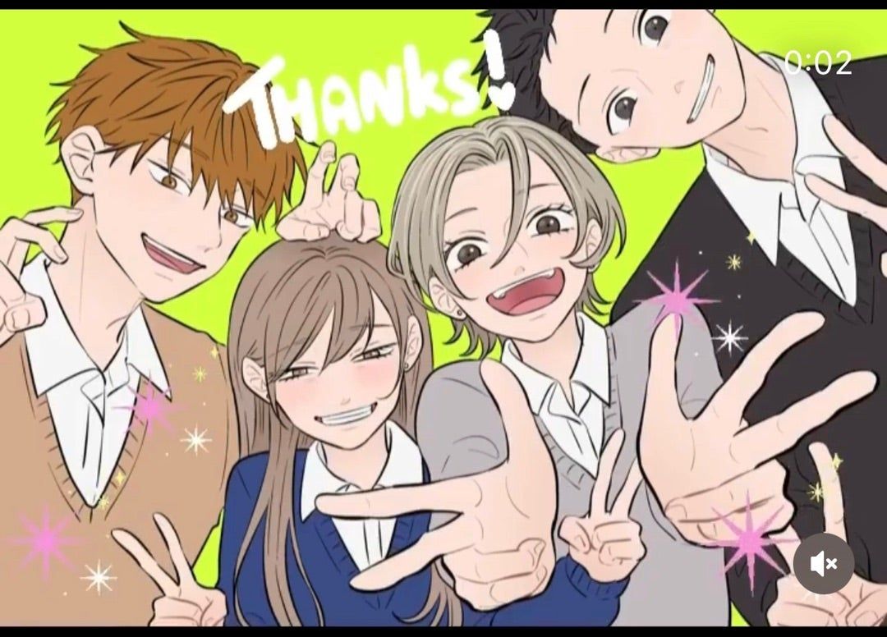
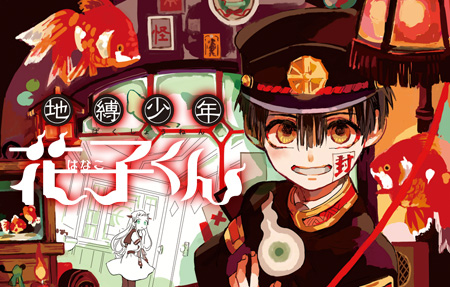
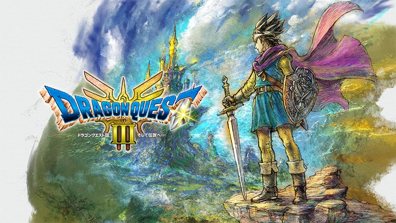
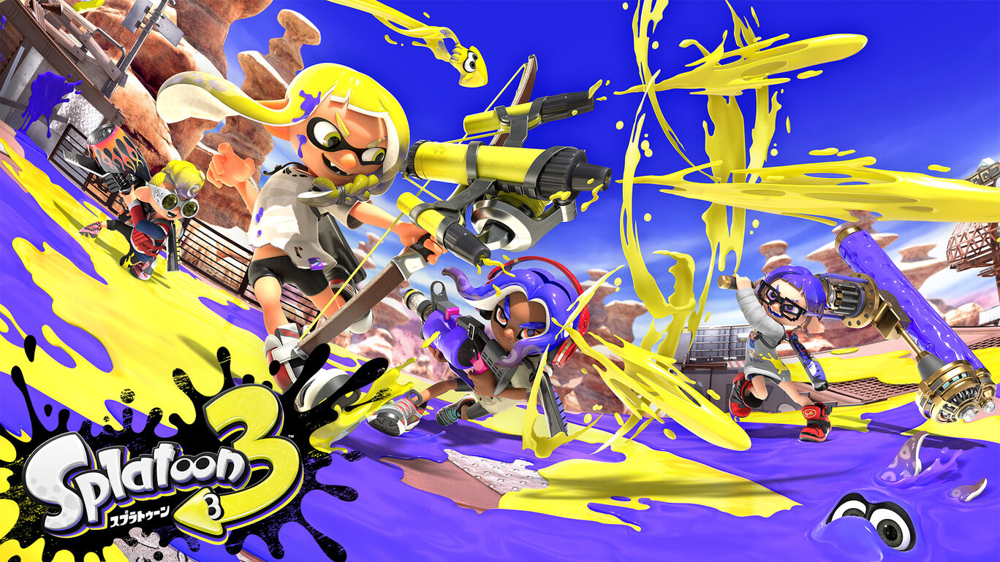
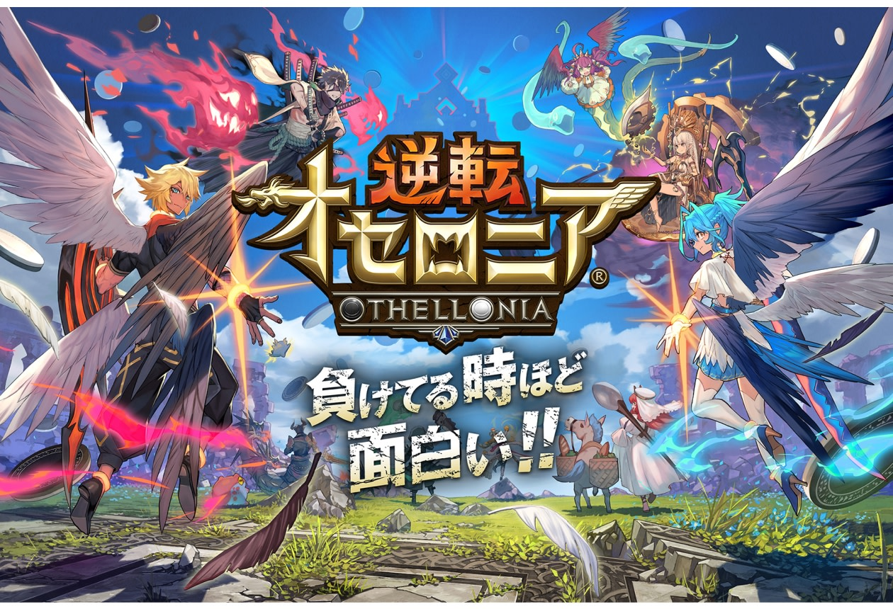
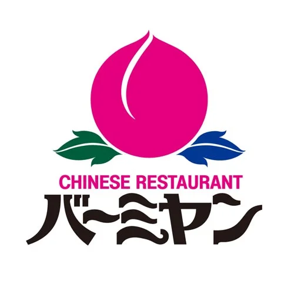

僕のお勧めしたいもの ～マンガ編～

僕のヒーローアカデミア
これは「僕のヒーローアカデミア」というマンガです！アニメが７期も続いた大人気作品です。"個性"という特殊能力を人口の８割は持っていて、"個性"を悪用する人を取り締まるヒーローという職業がありふれた世界で、主人公である緑谷出久は持っていません。そんな彼が最高のヒーローを目指す物語になります。
絵がとてもきれいで見やすく、全キャラ感情移入ができてしまうほど濃いキャラクターが多いです。また、１話から泣いてしまうほどつかみがしっかりしています。とても面白いのでぜひ読んでみてください！

氷の城壁
これは「氷の城壁」というマンガです！「氷の城壁」は僕が7周もするほど好きな作品で、２０２６年４月３日からアニメ化するのでマンガを買わないという人はぜひアニメから見てみてください！

地縛少年花子くん
これは「地縛少年花子くん」というマンガです！このマンガの作画はほかの作者さんとは少し違い、特徴的なのですがとても見やすく内容も分かりやすいです。マンガが初めても人でも読みやすいのでぜひ読んでみてください！
僕のお勧めしたいもの ～ゲーム編～

ドラゴンクエスト
これはドラゴンクエストです！この作品は聞いたことがないという人はいないはずですね。いろいろ種類がありますがどれもボリューム満点で時間を忘れるほど夢中になれます。ぜひやってみてください！

スプラトゥーン３
これは「スプラトゥーン３」です！インクを塗り合って戦うゲームになっていて、１・２・３と三作品も続いています。勝ち続けたときはめちゃくちゃ楽しいですがやられすぎるととってもイライラするのでコントローラーを壊さないように気を付けてください。

逆転オセロニア
これは「逆転オセロニア」です！今年で十周年なので名前だけは聞いたことある方が多いと思います。ですが僕の周りでこのゲームをやっている人にあったことはありません。悲しいです。
このゲームは名前の通り、オセロを題材にしたゲームです。駒一つ一つにキャラクターがあり、その駒で相手の駒を返して攻撃をし、相手のＨＰを０にしたほうが勝ちになります。簡単そうに見えますが置く駒、置く場所、置くタイミングによってピンチな状況でも逆転することができるので、考えながらゲームをしたい方にすごくお勧めです！
僕のお勧めしたいもの ～レストラン編～

バーミヤン
これは「バーミヤン」です！中華の料理を堪能することができ、価格も高くなく、学生でもかなり生きやすいお店となっています。「バーミヤン」でお勧めしたいのは酸辣湯です。ここの酸辣湯が本当においしくてすっぱくて少し辛いラーメンが食べたい人にとってもお勧めです！

バーガーキング
これは「バーガーキング」です！ハンバーガー店は様々ありますが、その中でも「バーガーキング」がお勧めです。とってもジューシーなビーフにシャッキシャキなレタスがおいしく、なにより一つのバーガーが大きいので一つで大満足できます。食べたことのない人はぜひ食べてみてください！
丸亀製麺
これは「丸亀製麺」です！うどんのお店もたくさんありますが、丸亀製麵はその中でも特に美味しいと思います。提供時間がとても短いのでお昼休憩などのあまり時間がないときにスッと食べることができます。僕が高校生の時は明太釜玉うどんをめちゃくちゃ食べていました。お勧めです！